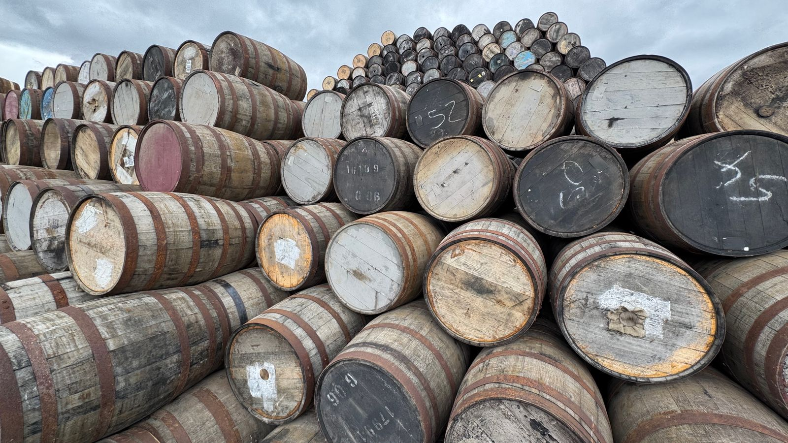

About the Distiller
From the mash floor up
Hamish Calder started in 1999 the way distillers used to start: at the bottom of the building, shovelling grist and washing out the mash tun at two island distilleries whose names stay off this page — they have their own ledgers to keep.
Eleven years of mash floors, washbacks and still rooms followed, then five running the spirit safe at a mainland distillery, learning the two lessons this whole practice stands on. The first: the cut is the craft — where the stillman takes the heart of the run decides more of the final glass than any cask bought afterwards. The second: the paperwork is part of the whisky — a cask you cannot account for is a story, not a stock item.
Peat Smoke began in 2016 as a bonded corner of a Campbeltown warehouse and a stubborn idea: that a small distiller could sell whisky the way an engineer sells work — figures printed, methods stated, judgement labelled as judgement. The still room runs two small copper pot stills, fills a few hundred casks a year, and bottles in runs small enough that every entry in the ledger can be checked by hand.
One title, explained honestly: “master distiller” is a job description, not a protected title or a qualification. It means the person accountable for the spirit — for the malt bill, the cut and the cask choices. Here, that person is Hamish, and this page is where he accounts for it.

The Working Page
How the still room works
How tastings are run
- Measures are measures: 25 ml pours, 15 ml in flights, poured from a measured jigger — never a free hand.
- Water is on the table from the first glass, with a pipette, because dilution is part of tasting, not a confession of weakness.
- Spittoons are provided and used — by the distiller first, so nobody feels watched for using one.
- Nothing is sold at the table. Bottles wait at the door with their prices printed, after the last pour, for people who still want them sober.
- Fourteen seats, no standing, and the evening ends at nine — whisky is the subject, not the endurance test.
Sourcing, paperwork & storage
- Buying: casks and bottles are bought from merchants and at auction only with provenance in writing — fill records, ownership history, warehouse receipts. A gap in the paper is a gap in the price, or a refusal.
- Bond: stock is held under bond in a bonded warehouse; duty is paid when a cask or case leaves, which is one honest reason single casks cost what they cost.
- Storage: dunnage-style — casks on rails over an earth floor, cool and humid, losing their angels' share of roughly 2% a year and saying so.
- Records: every cask's entry — fill date, malt specification, cask history, samples drawn — lives in the ledger this site is designed after. Ask to see an entry and it is opened.
The Honesty Page
Four things this practice will keep saying
PPM is not perception
The phenol figure describes the malt before fermentation. The still, the cask, the strength in the glass and the water you add each take a share, and palates differ besides. A 20 ppm whisky in a refill cask can taste smokier than a 40 ppm one drowned in sherry. The number is a starting point for a conversation — anyone using it as the whole conversation is selling, not telling.
Age is not quality
An age statement is a legal minimum — the youngest whisky in the bottle — not a medal. Wood works on spirit whether the spirit wants it or not: a tired twenty-five can be worse than a bright ten, and a well-made young whisky from a good cut beats both. That is why the ledger leads with band and cask, and lets the age sit in its proper place: one fact among several.
Colour & filtration, declared
Peat Smoke bottles without chill-filtration, and says so on the label — the whisky may haze in a cold glass, which is chemistry, not a fault. Colour comes from the cask or it does not come; where the wider trade adds caramel colouring legally, that too should be printed rather than whispered. What is in the bottle should be on the bottle.
Nothing here is an investment
Whisky from this still room is made to be opened. Bottles are priced for drinking, scarcity is never marketed, and no one here will discuss appreciation, portfolios or returns. If you want an investment, the distiller will happily pour you something honest while you phone a financial adviser.
Terms, plainly. Tastings and sales are 18+ only; ID is asked where there is doubt, without apology. Tasting seats are transferable to another name free of charge and refundable until seven days before the evening. Bottles are sold within the UK, posted in proper whisky packaging at cost. Verification verdicts are given in writing and are the practice's professional opinion on the evidence available — stated as such, never dressed as a laboratory certificate. Consultancy and list-building are engaged by the day, with the day rate agreed before the first day is worked.